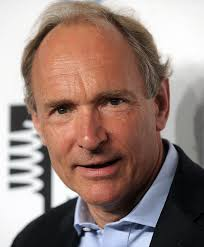

Revolusi 3.0
Revolusi ini dikenal sebagai Revolusi Digital, di mana komputer dan teknologi informasi mulai menggantikan sistem mekanis dan elektronik konvensional. Otomatisasi industri meningkat pesat dengan penggunaan komputer dan robotika dalam proses produksi. Internet juga mulai berkembang, menghubungkan berbagai sektor industri secara global.
Revolusi ini membawa kemajuan pesat dalam telekomunikasi, elektronik, dan perangkat lunak. Teknologi digital mulai menggantikan metode produksi lama dan menciptakan industri baru seperti teknologi informasi dan komunikasi (TIK).
Orang Penting
